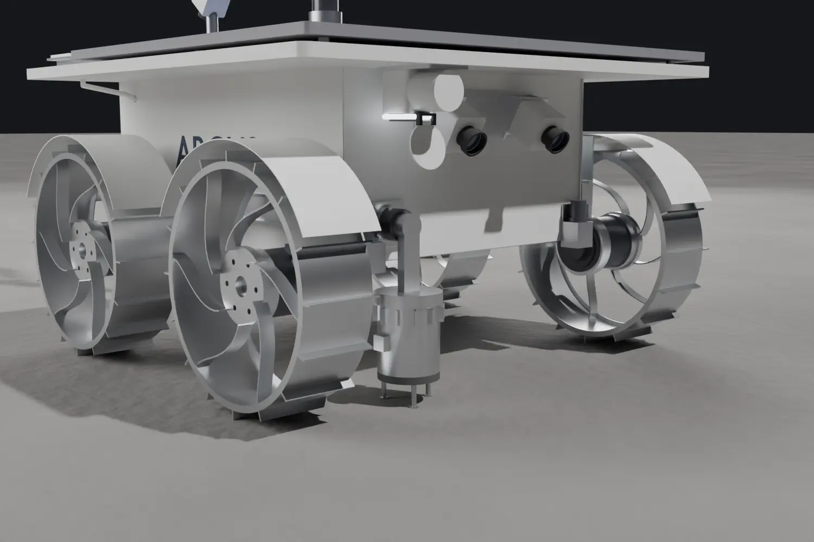
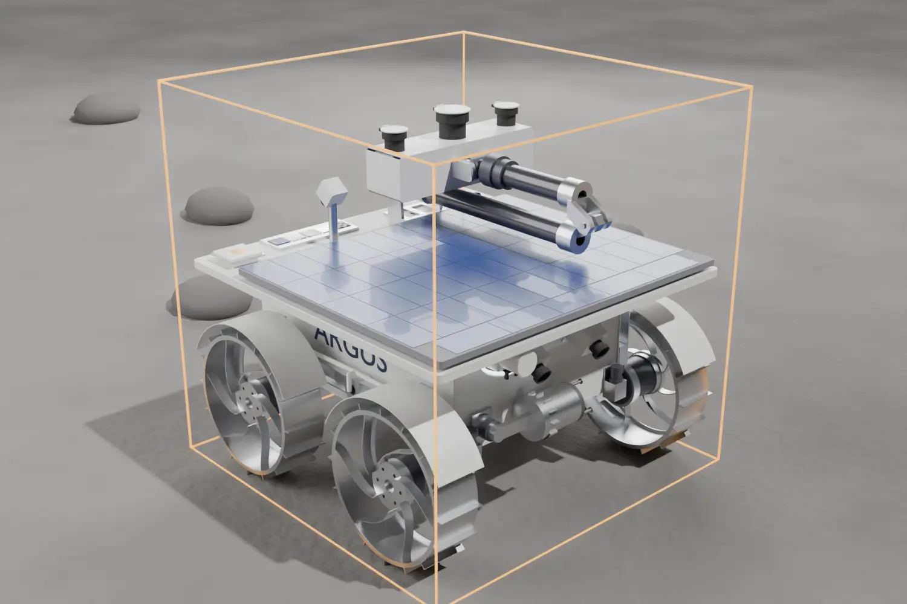
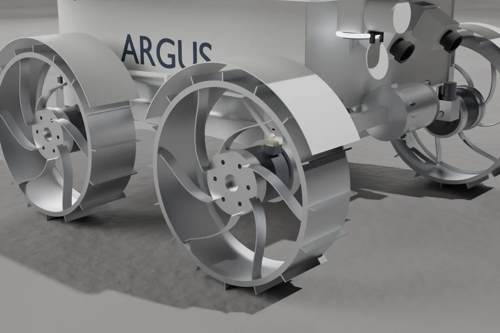
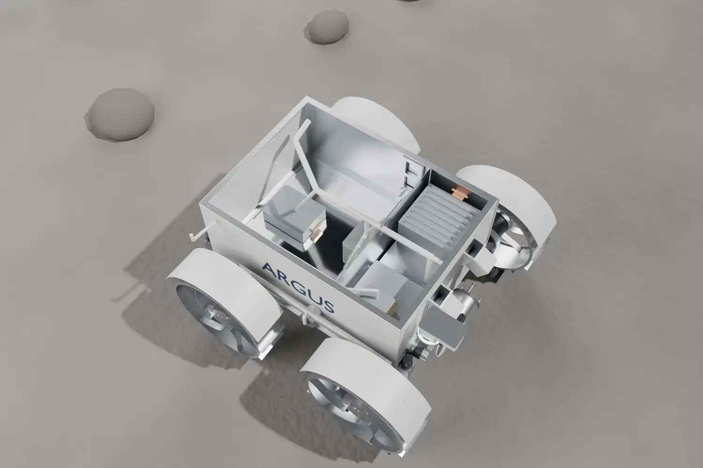
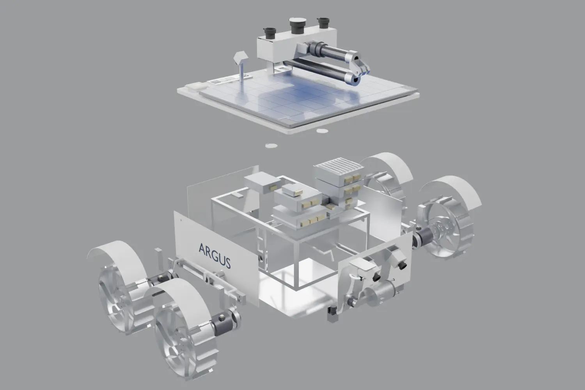
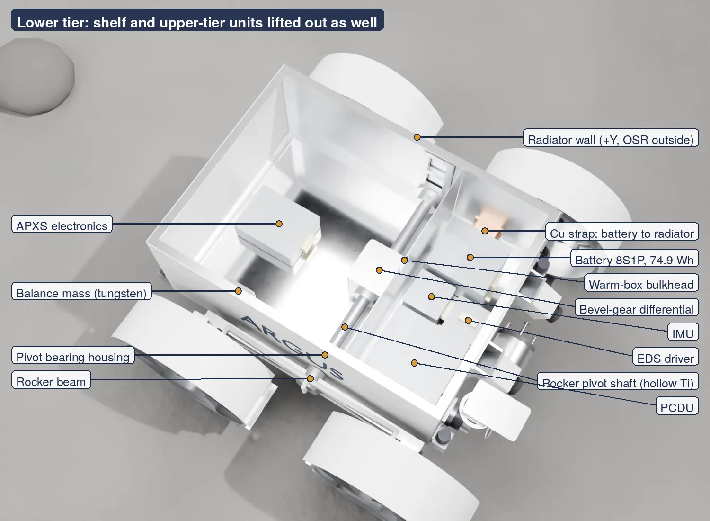
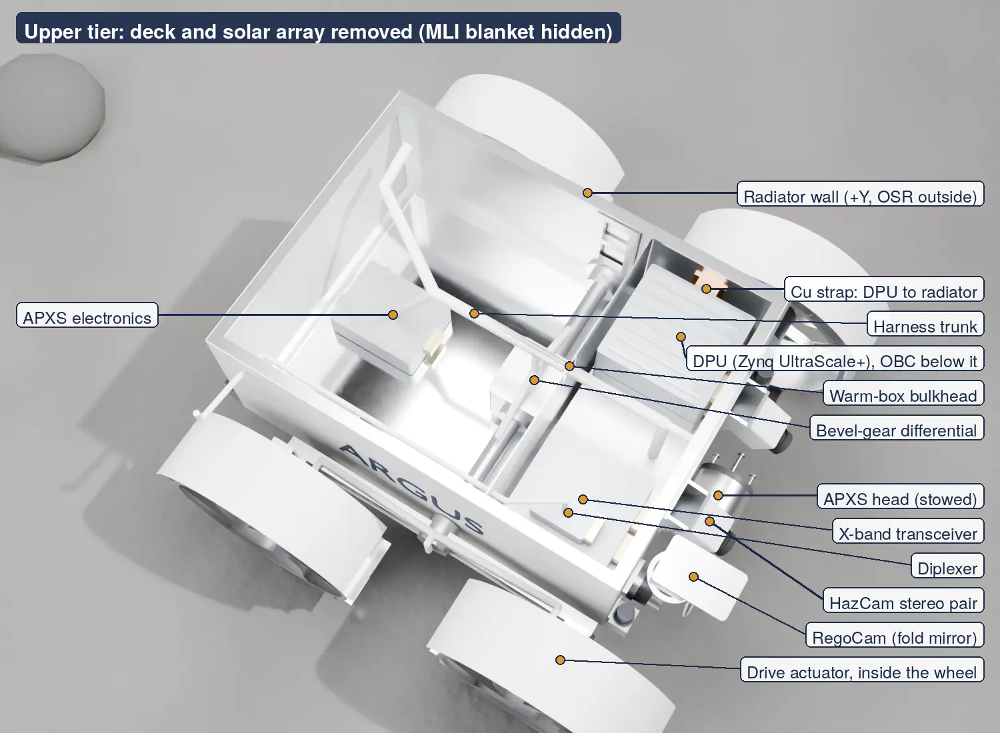
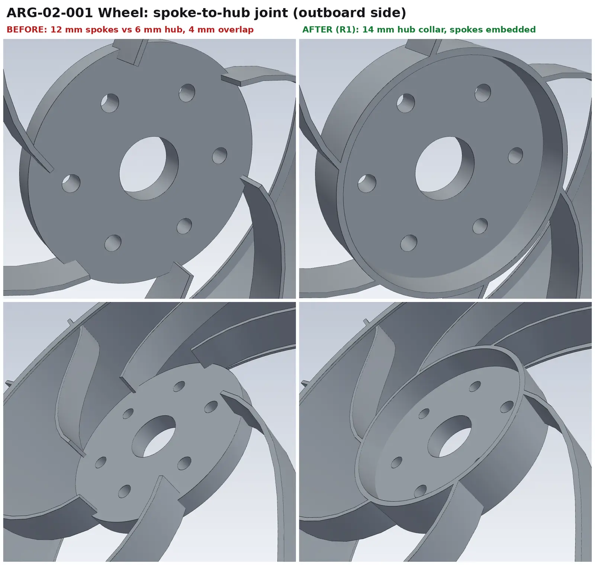

ARGUS lunar rover
A 20 kg lunar rover designed end to end by a team of nine students I led, with a drivable 3D test on the web.
The project
ARGUS is the Space Systems Engineering project of SDU's fifth semester: a 20 kg rover that spends one equatorial lunar day studying how the soil would behave under a lander's plume, so future landing pads can be built from it. I led and coordinated a team of nine engineering students through the full design, and integrated the mechanical, thermal, power and software work.
Every number in the project lives in one synchronized, well-architected source of truth. Mass, power and thermal budgets, tables, figures and the report are rebuilt from it, so a design change propagates everywhere at once. I used Claude agents to build the CAD generators, the checks and the documents under that system.
What I did
- Led the team of nine from requirements to a reviewed design, and ran integration across all subsystems.
- Single source of truth: one Python model computes every budget; the report, tables and web pages are generated from it.
- Revision system: every design change gets a dated revision and is checked against the mass limit and margins.
- Four-wheel rocker-differential chassis, a lid-mounted solar array over a zenith radiator, stereo cameras and an APXS instrument.
- Surface Test: a browser game where you drive the current design on the Moon, switch revisions and inspect every part down to each screw.
Under the hood
# Single source of truth for every number quoted in the A1 report.
S_SOL = 1361.0 # W/m^2 solar flux at the Moon
SIGMA = 5.67e-8 # W/m^2K^4 Stefan-Boltzmann
G_MOON = 1.62 # m/s^2
FLUX_VAR = 0.035 # +-3.5 % over the year
S_MAX = S_SOL*(1+FLUX_VAR) # thermal worst case -> 1408.6 W/m2
S_MIN = S_SOL*(1-FLUX_VAR) # power worst case -> 1313.4 W/m2
T_REG_HOT = (S_MAX/SIGMA)**0.25 # design hot case of the regolithLive preview
Renders, results and photos






